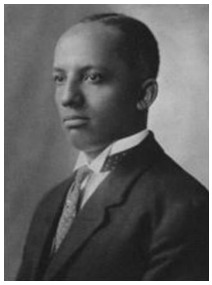

John Stanard

John Stanard foi um inventor afro-americano que revolucionou a refrigeração doméstica ao projetar um modelo de refrigerador mais eficiente. Sua inovação facilitou a conservação de alimentos e influenciou diretamente o design moderno de refrigeradores.
Principais Contribuições
- Aprimorou o design do refrigerador, tornando-o mais eficiente e acessível.
- Obteve patentes para seu sistema de refrigeração que ajudou na conservação de alimentos.
- Contribuiu para o avanço tecnológico no armazenamento seguro de produtos perecíveis.
Saiba mais
Voltar